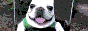
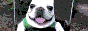
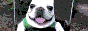

about me
10-31-2024hello. i am smaran aka sammish (online since 2013). this is my portfolio website, feel free to look around.
i used to make levels for the game osu! as a teen. more recently, i founded WreckCon.
i am reachable via bsky @sammi.sh
currently
- looking for a job
- getting my masters in cs
- trying to lose weight
- making video games for fun
- writing a blog post/essay on ai art
- experiencing becoming
likes
(exhaustive)
buttons
 



